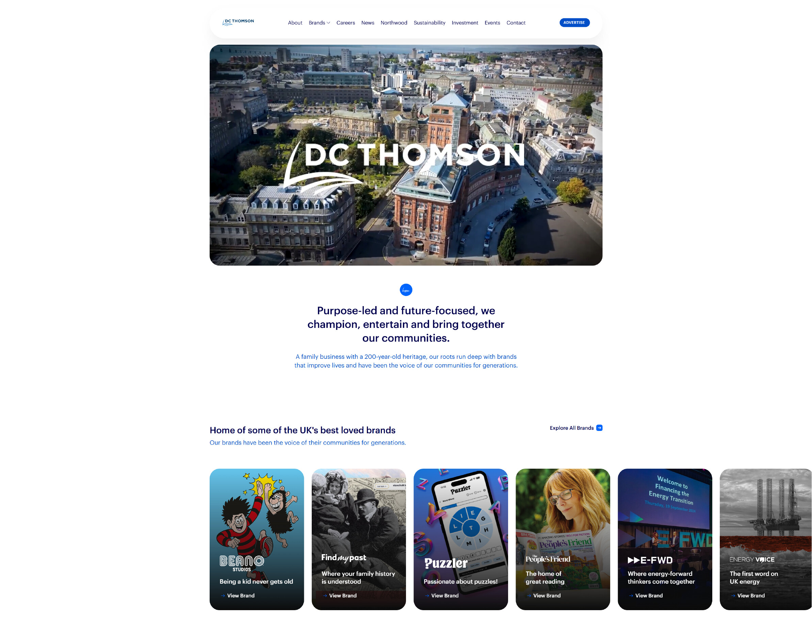
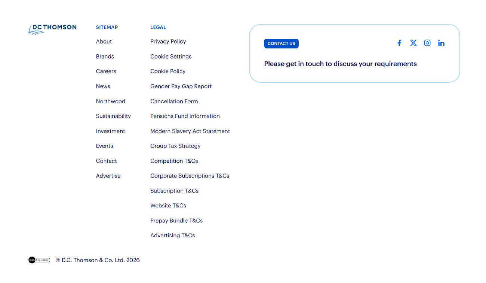

We haven't redesigned anything. These are DC Thomson's own pages, with one reChanneld layer added. It greets subscribers, finds out what they need, and shows them the fastest way to get it done.


Take a break, restart automatically
Keep reading for less
We may fix it today
Continue to the form
It opens as a bottom sheet on any title's site or app. Readers who notice a missing paper over breakfast get it sorted before they finish their coffee.
Your brands, as they are today. The front door can be added to each one.
Where each topic ends up this week, The Courier (illustrative data)
Your pages, navigation and brands stay exactly as they are.
One script tag on the pages you choose, on the corporate site, title sites or apps.
It links to your existing help centre, My Account (Air Business) and phone teams.
For every subscriber, open 24/7, configured by your CX team, with live insight.